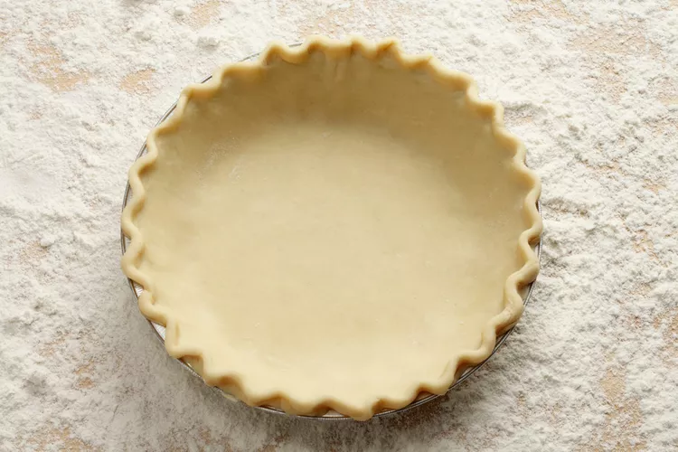

5 Tips for Holiday Baking
By Vanessa Greaves
Pie-making is a true labor of love, but because it can also be time-consuming, we see nothing wrong with taking a shortcut or two when necessary. If you're craving pie but don't have several hours to invest in making a homemade crust (or you don't trust your pastry skills just yet!), going the store-bought route is a perfectly reasonable shortcut that saves time and labor.
Yet as convenient as they are, store-bought crusts often fall short in texture and flavor compared to crusts made from scratch. Luckily, we've consulted a group of professional bakers and pastry chefs to gather their top tips for making a store-bought pie crust taste like homemade, and here's what they had to tell us:

Published on December 14, 2018
1. Choose a reputable brand that uses real butter
Pastry chef, recipe developer, and food blogger Claire Wells of Baked By Claire tells us although generic-brand pie crusts often ring in at a lower price than brand-name versions, it's best to take the guesswork out of the equation by "finding a well-recommended brand like Pillsbury and following the instructions on the package." She also advises giving the ingredients list a careful read, saying you should "choose a brand that uses butter. Even if it's only a small amount, it will likely taste better than those that don't use any butter at all."
Recipe developer and baking blogger Michelle Keldgord of BakingHow agrees with Wells' emphasis on butter in store-bought crusts, adding "Sure, lard and other fats can give you great flavor and texture, but in my opinion, nothing beats butter. Butter will provide a rich flavor and a desirably flaky texture."
2. Buy sheets of pre-made pie dough and shape the crust yourself
"When shopping for pie crust at the grocery store, you'll likely notice two crust styles available for sale: sheets of pie crust and pre-formed crusts already placed into baking tins. In some cases, the pre-formed option is the only viable one; for instance, if you're buying a cookie crust or a graham cracker crust. However, if you're seeking a traditional pie dough, chef-instructor Kierin Baldwin of the Institute of Culinary Education recommends "using sheets of pie crust rather than pre-shaped shells, since putting your hands to the dough to shape the shell will make it appear more homemade."
3. A brush of butter (and maybe a sprinkle of cookie crumbs) adds moisture and texture
Since store-bought pie crusts have a tendency to dry out, our experts suggest using a moistening agent to imbue the crust with texture and flavor. Wells ups the ante by adding crushed cookies: "My favorite way to upcycle store-bought pastry is to brush it with melted butter and sprinkle over crushed cookies. I like to use buttery shortbread and a pinch of cinnamon. Make sure the cookies are crushed pretty fine — a food processor works best for this. Then gently press the crumbs into the pastry surface by adding a layer of parchment paper over the top and rolling your hand over the surface a couple of times to make sure it sticks. Alternatively, you can dust your counter with the cookie crumbs and lay the pastry on top. Roll it into the crumbs just enough so it sticks."
4. Add color, flavor, and sparkle with a cream wash, sugar, and a touch of booze
Chef Jason Smith, a winner of Food Network's "Holiday Baking Championship" and "Next Food Network Star" and a current participant in the HUNGRY Virtual Xperience, also likes to layer melted butter on top of a store-bought pie crust. However, he suggests adding a couple of secret ingredients: vanilla and bourbon. "I mix ¼ cup of melted butter, 1 teaspoon of vanilla, and ½ tablespoon of bourbon together and brush the inside edges and bottom of the crust before I blind bake, or before I fill the shell to make a baked pie. If I'm doing a two-crust pie, the crust I use on top also gets brushed. The buttery goodness, the sweet vanilla, and the oaky bourbon will take your pie crust from 'Oh, it's store-bought.' to 'Now that's homemade!'" Smith says.
Baldwin has a slightly different strategy for moistening a store-bought crust, explaining "I firmly believe in brushing a heavy cream wash onto homemade pie crusts before baking (rather than egg wash), and I think doing the same to the edge of a store-bought crust will give it a touch of real dairy flavor and help it brown perfectly. A delicate sprinkle of turbinado sugar on the edge of the crust just after the cream wash will zhuzh up the texture a bit too."
5. Focus on making an excellent homemade filling for your pie
Ultimately, our experts agreed the single best thing you can do to make a store-bought crust taste homemade involves a flavorful homemade filling. "In terms of taste, the best way to upcycle a store-bought pie crust is to put a homemade filling into it. You can't totally change the taste or texture of a store-bought crust, but you can distract people from it with an amazing homemade filling. A [great] filling will fool most people into thinking the whole thing is from scratch," Baldwin insists.